其他功能（第一部分）(Other functions (Part 1))¶
Multiwfn manual, p.1006–1030.英文原文见同名 English 章节。 Images:
../imgs/.
对应于 [-34,0] 范围。
显然苯环具有芳香性，因为在其上方 1 Å 处的 NICSZZ 明显为负值。还注意到，环内侧的磁屏蔽略强于环中心。
4.100 其他功能（第一部分）(Other functions (Part 1))¶
4.100.4 通过数值积分计算光气的动能和核吸引势能¶
(Calculate kinetic energy and nuclear attraction potential energy of phosgene by numerical integration)¶
建议你先阅读第 3.100.4 节，本例的目的是展示数值积分的用途和通用性。在量子化学程序中，动能和核吸引势能积分是解析计算的，解析方法在速度和精度上都有优势。在 Multiwfn 中，你可以用通用的数值积分功能来计算它们。局域动能（或称“动能密度”）是一个内置函数，我们首先在全空间对该函数积分以得到总动能。启动 Multiwfn 并输入：
Multiwfn 交互
- examples\COCl2.wfn — HF/6-31G* 波函数
- 100 — 其他功能（第一部分）(Other functions (Part 1))
- 4 — 在全空间对函数积分(Integrate a function over the whole space)
- 6 — 哈密顿动能密度 K(r)(Hamiltonian kinetic density K(r)) 结果为 1031.1092，与 Gaussian 输出值 1031.1107 非常接近。因为我不想让实空间函数列表变得冗长，所以像局域核吸引势能这样很少使用的函数没有作为内置函数，但你仍然可以通过修改源代码轻松使这些函数可用，请参阅附录 2。首先，在 function.f90 中搜索“function userfunc”，将其默认内容，即 "userfunc=1.0D0"，改为 "userfunc = -nucesp(x,y,z)*fdens(x,y,z)"，然后重新编译 Multiwfn，再重新做
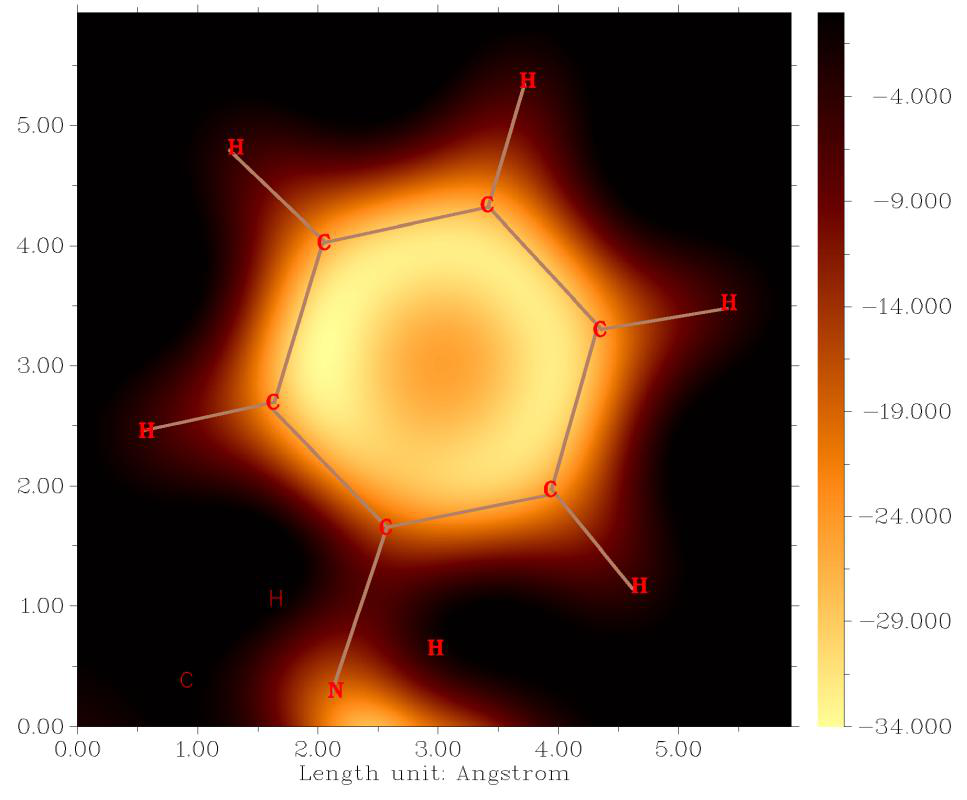
上述步骤，但选择函数 100 作为被积函数，你将得到核吸引势能 -2839.1668，Gaussian 输出的值为 -2839.1629，显然二者非常接近。如果你想得到来自特定轨道贡献的核吸引势能，可使用主功能 6 的子功能 26 将其他轨道的占据数设为零，然后如前进行积分。
为了进一步说明 Multiwfn 中数值积分功能的灵活性，假设你想计算 r2 算符的期望值，你可以将“userfunc”例程的内容修改为 "userfunc = (xx+yy+zz)fdens(x,y,z)"，然后重新编译 Multiwfn 并重新做积分，你将得到 444.6523，与通过主功能 300 的子功能 5 解析计算得到的
提示：你可能已经注意到，上面蓝色标出的两行代码已出现在 "userfunc" 例程中，它们分别对应 iuserfunc==12 和 iuserfunc==3 的情形。因此实际上你无需修改并重新编译 Multiwfn 的源代码，只需将 settings.ini 中的 "iuserfunc" 参数由默认值 0 分别改为 12 和 3，用户自定义的实空间函数就等价于这两个函数。关于 "userfunc" 例程中内置实空间函数的更多内容，见第 2.7 节。
4.100.8 使用组合的碎片波函数进行简单的能量分解¶
(Perform simple energy decomposition by using combined fragment wavefunctions)¶
注：以下方式进行的能量分解现已强烈不推荐使用！使用 sobEDA 或 sobEDAw 能量分解分析（基于 Multiwfn 和 Gaussian）是好得多的选择，不仅能得到完整项，而且使用更方便。见 J. Phys. Chem. A, 127, 7023 (2023) 以及非常详细的教程：http://sobereva.com/soft/sobEDA_tutorial.zip。
简单能量分解的原理已在第 3.100.8 节介绍，请先阅读。本节我们尝试用该方法分析 B3LYP/6-31G* 水平下加合物 NH3BH3 中 NH3 与 BH3 间相互作用能的组成。本节涉及的 Gaussian 输入和输出文件可在 "examples\EDA\EDA_simple" 文件夹中找到。此处使用的 Gaussian 版本为 Gaussian 16 B.01。
(1) 对 NH3BH3 做结构优化任务，然后用优化后的坐标创建新的输入文件，命名为 NH3BH3.gjf。
(2) 将 NH3BH3.gjf 复制为 NH3.gjf 和 BH3.gjf，然后在 NH3.gjf 中删除 BH3 碎片，在 BH3.gjf 中删除 NH3 碎片。在 NH3.gjf 和 BH3.gjf 中均加上 pop=full nosymm 关键词。
(3) 分别用 Gaussian 运行两个碎片的输入文件，生成 NH3.out 和 BH3.out。
(4) 启动 Multiwfn，输入以下命令 NH3.out //碎片 1(Fragment 1)
Multiwfn 交互
- 100 — 其他功能（第一部分）(Other functions (Part 1))
- 8 — 由碎片波函数组合生成带初猜的 Gaussian 输入文件(Generate Gaussian input file with initial guess combined from fragment wavefunctions)
- 2 — 共有两个碎片(There are two fragments in total) BH3.out //碎片 2(Fragment 2) Multiwfn 在当前文件夹生成 new.gjf，这就是以碎片组合波函数为初猜的 NH3BH3 的 Gaussian 输入文件。
(5) 确保 new.gjf 中含有 nosymm 关键词。为了在每次迭代输出 SCF 能量，将 "#" 改为 "#P"。pop=full 关键词可删除。
(6) 用 Gaussian 运行 new.gjf，生成 new.out。
从 NH3.out 和 BH3.out 中，我们可找到它们的单点能：E(NH3) = -56.5477099 a.u. E(BH3) = -26.5929634 a.u. 加合物的单点能可在 new.out 中找到：E(NH3BH3) = -83.2132069 a.u. 我们也将其称为 ESCF,last，因为它是 SCF 过程最后一次迭代打印的能量。
从 examples\EDA\EDA_simple\new.out 的第 639 行，你还可找到 SCF 过程第一次迭代打印的能量：
ESCF,1st = -83.12546124 a.u. 根据第 3.100.8 节所示公式，我们可计算能量项为
ΔEtot = E(NH3BH3) - E(NH3) - E(BH3)= -0.0725336 a.u.= -190.44 kJ/mol ΔEorb = ESCF,last - ESCF,1st = -0.0877456 a.u.= -230.37 kJ/mol ΔEsteric = ΔEtot - ΔEorb = 0.017218 a.u.= 39.93 kJ/mol
即 NH3 与 BH3 之间的总相互作用能为 -190.44 kJ/mol，轨道相互作用能 -230.37 kJ/mol 显著稳定了加合物；而位阻项（静电相互作用能、Pauli 排斥能与交换相关能变化之和）使加合物不稳定了 39.93 kJ/mol。
在当前体系中，与其他能量成分相比，色散相互作用可安全忽略，因此我们未单独讨论。但如果你研究的体系是由弱相互作用结合的配合物，由于其重要性，你必须单独研究总相互作用能中的色散成分，评估方法见第 3.100.8 节的说明。
4.100.12 对非限制性开壳层波函数的轨道做双正交化分析¶
(Biorthogonalization analysis for orbitals of unrestricted open-shell wavefunction)¶
注：本例的中文版及相关介绍见我的博客文章“非限制性开壳层波函数的双正交化方法的原理和应用”(http://sobereva.com/448)。
α 与 β 轨道之间的双正交化算法已在第 3.100.12 节介绍，请先阅读，该变换使 UHF 或 UKS 计算产生的轨道解释容易得多，因为之后只需考察一套轨道。本节我将说明该分析的价值，以 examples\ethanol_triplet.fch 为例。
该体系有 14 个占据 α 轨道和 12 个占据 β 轨道，首先让我们看其中几个：
可见只有 α 轨道 12 与 β 轨道 12 配对良好，而其他相同序号的 α 与 β 轨道并不彼此相似。显然，在讨论该波函数的轨道特征时会很麻烦，因为必须同时考察两套轨道。
现在我们对该波函数做双正交化。启动 Multiwfn 并输入 examples\ethanol_triplet.fch
Multiwfn 交互
- 100 — 其他功能（第一部分）(Other functions (Part 1))
- 12 — 对 α 与 β 轨道做双正交化(Perform biorthogonalization between alpha and beta orbitals)
- 2 — 对所有轨道做双正交化(Do biorthogonalization for all orbitals)
- 0 — 不计算双正交化轨道的能量(Do not evaluate energies of biorthogonalized orbitals) 该波函数的双正交化由三个连续步骤组成。例如，第一步输出的信息为
Doing biorthogonalization for alpha 1 to 14, Beta 1 to 12
Singular values of orbital overlap matrix:
1.0000 1.0000 1.0000 1.0000 1.0000 1.0000 1.0000 0.9999
0.9999 0.9998 0.9995 0.9992
如所示，该步对 α 轨道 1~14 与 β 轨道 1~12 做双正交化。所得相同序号的 α 与 β 轨道之间的交叠积分都非常接近 1.0，表明前 12 个 α 轨道已与前 12 个 β 轨道几乎完美配对。
当全部三个步骤完成后，当前文件夹生成 biortho.txt 和 biortho.fch。biortho.txt 的内容如下所示：
S = Singular value, E = Energy (in eV), O= Occupancy, A=Alpha, B=Beta
Orb: 1 S= 1.0000 O(A)= 1.0 O(B)= 1.0
...[ignored]
Orb: 11 S= 0.9995 O(A)= 1.0 O(B)= 1.0
Orb: 12 S= 0.9992 O(A)= 1.0 O(B)= 1.0
-----------------------------------------------
Orb: 13 S= 1.0000 O(A)= 1.0 O(B)= 0.0
Orb: 14 S= 1.0000 O(A)= 1.0 O(B)= 0.0
-----------------------------------------------
Orb: 15 S= 1.0000 O(A)= 0.0 O(B)= 0.0
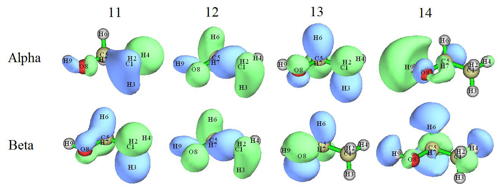
Orb: 16 S= 1.0000 O(A)= 0.0 O(B)= 0.0
...[ignored]
这些信息很容易理解。由于上面所示所有轨道的奇异值 (S) 都非常接近 1.0，因此 α 轨道与相同序号的 β 轨道匹配良好。
导出的 biortho.fch 含有双正交化轨道的波函数，这些轨道的“轨道能量”信息现在对应于奇异值。接下来，如果你输入 y，该文件将被立即载入，然后内存中的轨道就对应于双正交化轨道。这里我们输入 y 以载入 biortho.fch，然后进入主功能 0 直观考察新生成的 11~14 号 α 和 11~14 号 β 轨道，你将看到
从等值面图可见，当前的 α 与 β 轨道彼此完美匹配。“单占据分子轨道”(SOMO) 的概念原本是针对限制性开壳层波函数定义的，但现在也可理想地应用于当前波函数，轨道 13 和 14 现在可视为 SOMO。众所周知，非限制性开壳层波函数的自旋密度由所有占据 MO 决定，但经双正交化后，自旋密度将仅由 SOMO 贡献。显然，当前体系的自旋密度直接对应于轨道 13 和 14 的密度之和。
在 B3LYP/6-31G** 水平计算的单重态乙醇的 HOMO 和 LUMO 如下所示。将此图与上一图比较，可发现 HOMO 和 LUMO 看起来非常像双正交化后的 α 轨道 14 和 13。因此可立即理解，乙醇在单重态与三重态之间的跃迁可很好地表示为
HOMO→LUMO 跃迁，因为经这样的轨道跃迁后 HOMO 和 LUMO 都将被一个电子占据，这种电子结构正好对应于双正交化轨道所表示的电子结构。显然，若无双正交化分析，这类有价值的信息是无法得到的，这体现了双正交化在开壳层体系实际研究中的重要性。
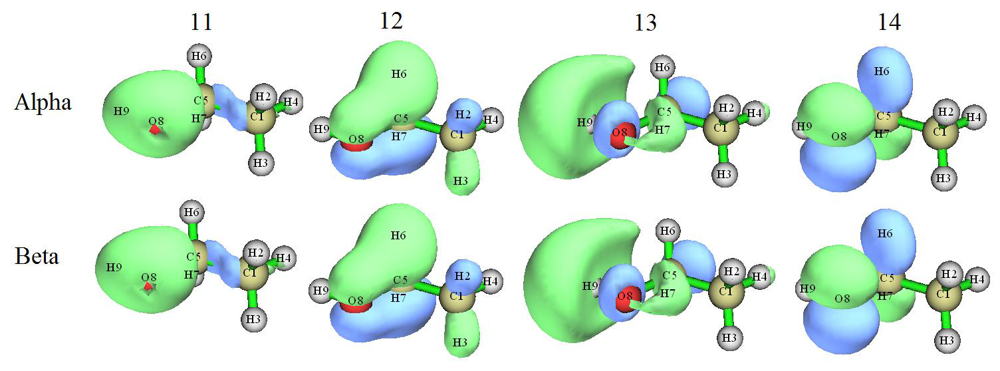
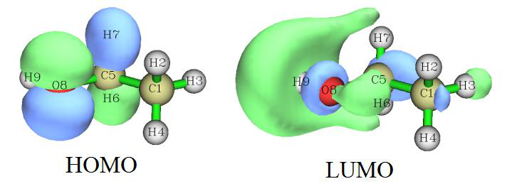
值得强调的是，双正交化不改变体系的任何可观测量性质，如总电子能量、总密度、自旋密度等。由于在上述过程中我们没有要求 Multiwfn 计算双正交化轨道的能量，因此双正交化后轨道能量是没有意义的，它们仍是原分子轨道的能量，且双正交化轨道的顺序也不反映其实际能量的顺序。
双正交化也可应用于自旋极化的单重态体系，如双自由基，例子见我的博客文章“非限制性开壳层波函数的双正交化方法的原理和应用”（中文，http://sobereva.com/448）。
计算双正交化轨道的能量并按能量排序 接下来，我将说明如何同时让 Multiwfn 计算双正交化轨道的能量并按能量排序，仍以三重态乙醇为例。启动 Multiwfn 并输入
Multiwfn 交互
- examples\ethanol_triplet.fch 100 — 其他功能（第一部分）(Other functions (Part 1))
- 12 — α 与 β 轨道间的双正交化(Biorthogonalization between alpha and beta orbitals)
- 2 — 对所有轨道做双正交化(Perform biorthogonalization for all orbitals)
- 1 — 利用由 MO 能量和系数经 F=SCEC-1 关系生成的 Fock 矩阵计算双正交化轨道的能量(Evaluate energies of the biorthogonalized orbitals using the Fock matrix generated by MO energies and coefficients via F=SCEC-1 relationship)
y // 按能量对双正交化轨道排序(Ordering the biorthogonalized orbitals according to their energies) 现在你可在当前文件夹找到导出的 biortho.fch 和 biortho.txt。后者的内容为：
...[ignored]
Orb: 11 S= 0.9992 E(A)= -13.057 O(A)= 1.0 E(B)= -11.821 O(B)= 1.0
Orb: 12 S= 1.0000 E(A)= -11.918 O(A)= 1.0 E(B)= -11.866 O(B)= 1.0
-------------------------------------------------------------------------------
Orb: 13 S= 1.0000 E(A)= -11.439 O(A)= 1.0 E(B)= -5.806 O(B)= 0.0
Orb: 14 S= 1.0000 E(A)= -0.293 O(A)= 1.0 E(B)= 2.817 O(B)= 0.0
-------------------------------------------------------------------------------
Orb: 15 S= 0.9992 E(A)= 13.876 O(A)= 0.0 O(B)= 0.0 E(B)= 15.431 O(B)= 0.0
Orb: 16 S= 1.0000 E(A)= 15.057 O(A)= 0.0 E(B)= 15.305 O(B)= 0.0
...[ignored]
因为在本例中我们计算了轨道能量，因此 biortho.txt 中也明确显示了能量。可见基本配对的 α 与 β 双正交化轨道具有可察觉的不同能量，例如 E(alpha 11)= -13.057 eV 而 E(beta 11)= -11.821 eV，这是因为 α 与 β 轨道感受到不同的有效势（即 α 与 β Fock 算符不同）。此外，可发现轨道序号的顺序已与轨道能量的顺序一致，因为我们已要求 Multiwfn 按能量对轨道排序（更具体地，是按相同序号的 α 与 β 轨道的平均能量）。注意 biortho.fch 中的轨道能量信息现在也对应于双正交化轨道的实际能量。
然后，你可输入 y 以载入刚生成的 biortho.fch，以便随后直接用主功能 0 可视化双正交化轨道。序号最高的两个占据 α 双正交化轨道，即当前体系中形式上被两个未成对电子占据的两个轨道
如下所示。
它们的形状与 α MO 13 (-10.083 eV) 和 α MO 14 (-0.276 eV) 非常接近，同时能量也没有太大差别。
注意如第 3.100.12 节所述，每一批中的轨道是单独排序的，因此不同批中轨道的相对顺序不会因排序而改变。此外，排序基于每个 α 轨道与其 β 对应轨道的平均能量，因此排序过程中保持了 α-β 轨道对应关系。
顺便说一下，也可基于从外部文件载入的 Fock 矩阵计算双正交化轨道的能量（详见附录 7），若无法基于 MO 能量和系数成功生成 Fock 矩阵，这是唯一的选择。例如，Fock 矩阵可从 .47 文件载入。用 Gaussian 运行 examples\ethanol_triplet_47.gjf，然后你将在 C:\ 文件夹得到 ETHANOL_TRIPLET.47（该文件已作为 examples\ETHANOL_TRIPLET.47 提供）。若当 Multiwfn 询问是否计算双正交化轨道能量时选择选项“2 从文件载入 Fock 矩阵进行计算(Evaluate, loading Fock matrix from a file)”，然后输入 .47 文件的路径，则将使用 .47 文件中记录的 Fock 矩阵来计算双正交化轨道能量。
4.100.14 计算 LOLIPOP 指数¶
(Calculate LOLIPOP index)¶
本节我说明如何计算 LOLIPOP（Localized Orbital Locator Integrated Pi Over Plane，局域轨道定位符在平面上方的 π 积分）指数。该指数被证明可用于预测芳香环 π 堆积强度。简要介绍见第 3.100.14 节，更多信息见 Chem. Commun., 48, 9239 (2012)。
4.100.14.1 平面体系的例子：菲¶
(Example of planar system: phenanthrene)¶
本节我以严格平面的体系菲为例，我们将考察哪个环具有相对更强的 π 堆积能力。原子编号如下所示
启动 Multiwfn 并输入以下命令 examples/phenanthrene.wfn
Multiwfn 交互
- 100 — 其他功能（第一部分）(Other functions (Part 1))
- 14 — 计算 LOLIPOP(Calculate LOLIPOP)
- 1 — 选择要考虑的 π 轨道(Choose π orbitals that to be taken into account) 36,40,43,44,45,46,47
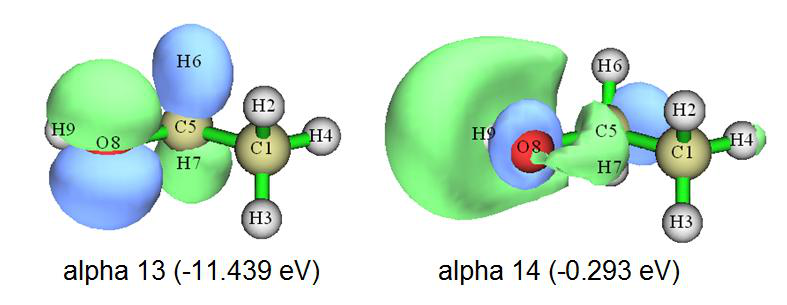

Multiwfn 交互
- 0 — 开始计算(Start the calculation)
- 8,9,11,13,14,15 — 你感兴趣的环中原子的序号。该环是边界环。注意你应按原子连接顺序输入序号
Multiwfn 交互
- 等待一会儿，从屏幕可见 LOLIPOP 值为 8.23。然后输入 0 — 再次开始计算(Start the calculation again)
- 7,3,4,8,9,10 — 中间环中的原子 LOLIPOP 值为 6.39 由于更小的 LOLIPOP 值对应更强的 π 堆积能力，我们可预期在中间环上方形成 π 堆积的趋势强于边界环。
注意 LOLIPOP 界面中有选项 6。若你选择一次将其状态切换为 "Yes"，则在计算 LOLIPOP 后，满足过滤条件的点
（即 LOLIPOP 积分中所包含的 LOL-π 所在的点）的坐标将被导出到当前文件夹的 pt.xyz。你可将此文件载入 VMD 程序，将绘制方式设为 "Points" 以可视化其分布。例如，下图为中间环 LOLIPOP 计算中实际考虑的点，分子结构文件也载入 VMD 并以 CPK 风格绘制。可见所考虑点的分布完全合理，因此 LOLIPOP 结果应是有意义的。
4.100.14.2 非平面体系的例子：联苯¶
(Example of non-planar system: biphenyl)¶
本例我用联苯说明如何计算非平面体系的 LOLIPOP。结构和原子编号如下所示
为了使 LOLIPOP 中涉及的 LOL-π 计算可行，通常我们需要做轨道定域化以产生定域分子轨道 (LMO)，然后用
Multiwfn 自动识别 π 型 LMO 的序号，相关例子见第 4.100.22 节更多细节。注意为了做轨道定域化，你必须使用含有基函数信息的文件作为输入文件，如 .fch、.mwfn、.molden 等，更多信息见第 2.5 节。
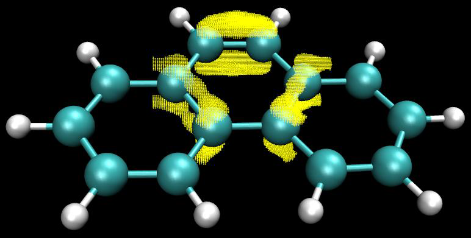
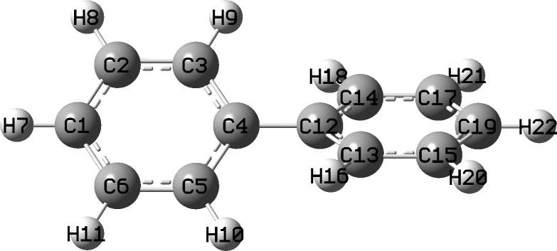
Multiwfn 交互
- 启动 Multiwfn 并输入 examples\biphenyl.fch 19 — 轨道定域化(Orbital localization)
- 1 — 仅定域化占据 MO(Only localize occupied MOs)
- 100 — 其他功能（第一部分）(Other function (Part 1))
Multiwfn 交互
- 22 — 自动识别 π 轨道(Automatically detect π orbitals)
- -1 — 当前轨道为定域形式(Current orbitals are in localized form)
0 // 以默认设置开始 π 轨道识别(Start π orbital identification based on default settings) 现在可见有 6 个被识别的 π 轨道（更具体地，它们是 π LMO）：
Expected pi orbitals, occupation numbers and orbital energies (eV):
32 2.000000 -10.110351
34 2.000000 -9.633443
38 2.000000 -7.386451
39 2.000000 -6.768520
40 2.000000 -6.755193
41 2.000000 -6.046329
然后我们输入
Multiwfn 交互
- 0 — 不修改轨道占据数(Do not modify orbital occupation numbers)
- 14 — LOLIPOP 计算(LOLIPOP calculation)
Multiwfn 交互
- 1 — 选择 π 轨道(Choose π orbitals)
- 32,34,38,39,40,41 — π 轨道的序号
- 0 — 开始计算(Start calculation)
- 1,2,3,4,5,6 — 一个环中原子的序号 结果为 8.82，略高于边界环的结果（见
上一节），表明联苯中的环具有显著的形成 π-π 堆积的能力。
只考虑环的一侧 顺便说一下，每个环有两侧，若当前体系相对环平面不对称，两侧的 LOL-π 分布可能明显不同。为了分别研究两侧的 π 堆积能力，在开始计算前你可选择选项 "5 选择要考虑的点的所在侧(Choose side of the points to be taken into account)" 以设置 LOLIPOP 计算中考虑哪一侧。默认两侧都考虑。
以当前分子为例，若我们选选项 5 然后输入 1 以选 "侧 1(Side 1)"，并选选项 6 以让 Multiwfn 导出 pt.xyz 以便直观可视化 LOLIPOP 积分中实际考虑的点，则在 LOLIPOP 计算后，你会发现 LOLIPOP 为 4.41，正好是我们之前所得值 (8.82) 的一半，因为
LOL-π 分布相对所选环是对称的。所得 pt.xyz 中记录的点如下图所示，可见，它们确实只分布在环的一侧。
若想计算另一侧的 LOLIPOP，应在选项 5 中选 "侧 2(Side 2)"。
4.100.15 计算 DB-TTF 的分子间轨道交叠积分¶
(Calculate intermolecular orbital overlap integral of DB-TTF)¶
注：本节的中文版是我的博客文章“分子间轨道重叠的显示和计算”(http://sobereva.com/163)，其中还包含更丰富的讨论。
分子间轨道交叠积分在讨论分子间电荷转移中很重要，介绍见第 3.100.15 节。本例我们计算下图所示二聚体中两个 DB-TTF（二苯并四硫富瓦烯）单体间的 HOMO-HOMO 和 LUMO-LUMO 交叠积分。二聚体结构取自 CSD（剑桥结构数据库）。我们用的波函数水平为 B3LYP/6-31G*，MO78 和 MO79 分别对应 HOMO 和 LUMO。
如第 3.100.15 节所述，我们必须为二聚体和两个单体制备含基函数信息的波函数文件。例如，你可用 Gaussian 生成相应的 .fchk 文件，用于此目的的 Gaussian 输入文件已在 "examples\intermol\" 文件夹提供；若你不想自己用 Gaussian 运行，可直接从 http://sobereva.com/multiwfn/extrafiles/intermol.rar 下载所得 .fchk 文件。
值得解释三个 .gjf 文件。两个单体输入文件 DB-TTF1.gjf 和 DB-TTF2.gjf 中的坐标直接取自二聚体输入文件 DB-TTFdimer.gjf，单体 1 的原子在此文件中排在单体 2 之前。三个文件中都用了 nosymm 关键词，它要求 Gaussian 不自动将输入文件中的坐标转到标准取向，以使单体 .fchk 文件中的坐标与二聚体 .fchk 文件中的完全一致。因为二聚体 .fchk 文件仅被 Multiwfn 用于生成基函数间交叠矩阵，而从不使用二聚体的 MO，因此二聚体输入文件采用 guess(save,only) 让 Gaussian 只生成并保存初猜轨道，不需任何花费。pop=none 与其连用，它抑制输出文件中无用的大量轨道展开系数输出。
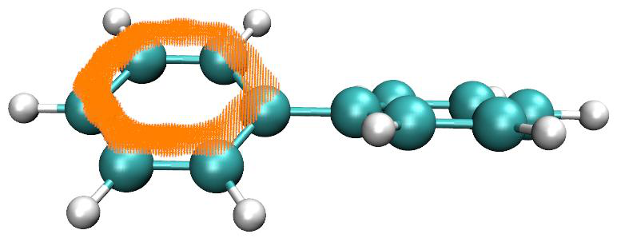
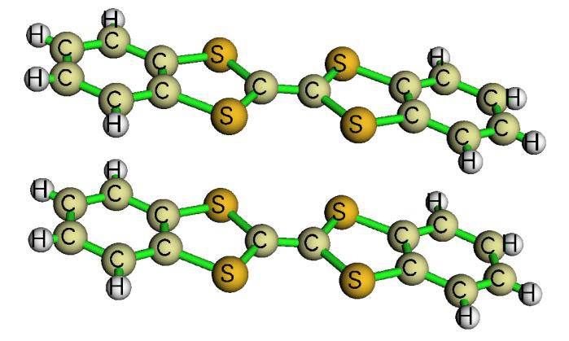
现在，启动 Multiwfn 并输入以下命令：
Multiwfn 交互
- DB-TTFdimer.fchk — 二聚体的波函数文件(Wavefunction file of dimer)
- 100 — 其他功能（第一部分）(Other functions (Part 1))
- 15 — 计算分子间轨道交叠积分的功能(Function for calculating intermolecular orbital overlap integral)
- DB-TTF1.fchk — 单体 1 的波函数文件(Wavefunction file of monomer 1)
- DB-TTF2.fchk — 单体 2 的波函数文件(Wavefunction file of monomer 2)
之后，若我们输入 i,j，则打印单体 1 中 MO i 与单体 2 中 MO j 之间的分子间轨道交叠积分。为得到 HOMO-HOMO 间的积分，我们输入 78,78，结果为 -0.01411983；然后输入 79,79，我们会发现 LUMO-LUMO 间的积分为 0.01025897。
4.100.18 对菲的 Yoshizawa 电子传输路径分析¶
(Yoshizawa's electron transmission route analysis for phenanthrene)¶
本例我们将用 Yoshizawa 公式 (Acc. Chem. Res., 45, 1612 (2012)) 分析菲的有利电子传输路径。相关理论、输入文件要求和程序选项已在第 3.100.18 节介绍。碳的编号方式如下所示。
启动 Multiwfn 并输入以下命令：examples\phenanthrene_NAOMO.out //含 "NAOMO" 矩阵的 Gaussian 输出文件(The Gaussian output file containing "NAOMO" matrix)
Multiwfn 交互
- 100 — 其他功能（第一部分）(Other functions (Part 1))
- 18 — Yoshizawa 电子传输路径分析(Yoshizawa's electron transport route analysis)
- 2 — 选 YZ 平面，其为分子平面(Select YZ plane, which is the molecular plane) 然后程序将检测哪个原子有预期的 pz 原子轨道，并载入它们在所有 MO 中的展开系数。
现在我们选 1，并输入 2,11 以考察 2 与 11 之间的传输概率。从输出可知传输概率为 0.855879。各 MO 的贡献也显示了。从输出我们还知道若只考虑 HOMO 和 LUMO，概率将为 2.144432。尽管 Yoshizawa 的文章说通常只需考虑 HOMO 和 LUMO，但看来该近似在定量水平并不成立。距离路径 5.674656 Å 是原子 2 与 11 之间的距离。
接下来，我们考察哪些传输路径最有利。假设这次我们只想考虑 HOMO 和 LUMO，于是选选项 -1 并输入 47,48。然后选选项 2，你将看到
Note: The routes whose absolute value < 0.010000 will not be shown
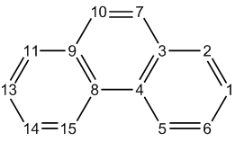
Note: The routes whose distance < 0.0000 or > 9999.0000 Angstrom will not be shown
Atom 7 -- Atom 10 Value and distance: 3.743670 1.359562
Atom 6 -- Atom 10 Value and distance: 3.098919 5.081382
Atom 7 -- Atom 14 Value and distance: 3.098919 5.081382
Atom 7 -- Atom 11 Value and distance: -2.831680 3.720990
Atom 2 -- Atom 10 Value and distance: -2.831680 3.720990
Atom 6 -- Atom 14 Value and distance: 2.565337 5.765892
...
Atom 6 -- Atom 9 Value and distance: -0.016585 4.927289
Atom 3 -- Atom 14 Value and distance: -0.016585 4.927289
Atom 2 -- Atom 4 Value and distance: -0.014931 2.456189
Atom 8 -- Atom 11 Value and distance: -0.014931 2.456189
这些路径按传输概率（绝对值）排序。若忽略连接三个碳的原子以及因对称导致的重复路径，最有利的四条路径为 7-10、6-10、7-11、6-14。该结论与下图所示 Yoshizawa 文章中的图完全一致！
注意 Yoshizawa 指出连接 9-10（对应我们编号中的 7-10）按规则预测为最佳路径，但因太近而无法构建金属-分子-金属结，所以他的图中未标出该路径。
现在我们考察从原子 2 出发的可行路径。选选项 3，并输入 2，你将看到
To atom 10 Value and distance (Angstrom): -2.831680 3.720990
To atom 14 Value and distance (Angstrom): -2.344569 6.206600
To atom 11 Value and distance (Angstrom): 2.144432 5.674656
To atom 5 Value and distance (Angstrom): -1.571512 2.787501
...
显然，2-10 是最有利的路径。
4.100.19 对由碎片波函数组合的全波函数做 ELF 分析¶
(ELF analysis on the whole wavefunction combined from fragment wavefunctions)¶
阅读本节前，请先阅读第 3.100.19 节以获得基础知识。分析前分子波函数（promolecular wavefunction）的特征通常很有趣，它对应于构成体系的碎片间无任何电子转移和极化时的状态。通常，我们可用主功能 3、4 和 5 中的“自定义操作(custom operation)”实现此目的，自定义操作的介绍及一些示例应用见第 3.7 节以及第 4.5.4 和 4.5.5 节。例如，我们想研究配合物 AB 的前分子态的电子密度
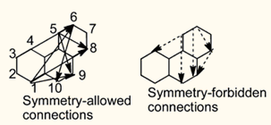
分布，利用自定义操作，我们可非常方便地让 Multiwfn 分别计算 A 的电子密度和 B 的电子密度，然后相加作为前分子态的电子密度。但此过程不适用于 ELF 这类非线性实空间函数；也就是说，AB 前分子态的 ELF 不等于 A 的 ELF 与 B 的 ELF 之和，结果完全无意义。对这类情形，我们应先组合碎片波函数作为前分子波函数，然后对其计算 ELF 以得到前分子态的 ELF 分布。
下面我将展示如何用 Multiwfn 基于 CO 和 BH3 的碎片波函数产生 COBH3 的前分子波函数，然后讨论相应的 ELF 特征。下面用的 .wfn 文件和相应的 Gaussian .gjf 文件可在 "examples\genpromol" 文件夹找到。
启动 Multiwfn 然后输入
Multiwfn 交互
- examples\genpromol\COBH3\CO.wfn — 碎片 1 的波函数文件路径(The path of wavefunction file of fragment 1)
- 100 — 其他功能（第一部分）(Other functions (Part 1))
- 19 — 由碎片波函数生成前分子 .wfn 文件(Generate promolecular .wfn file from fragment wavefunctions)
- 1 — 输出为 combine.wfn(Output to combine.wfn)
- 2 — 共两个碎片(Two fragments in total)
- examples\genpromol\COBH3\BH3.wfn — 碎片 2 的波函数文件路径(The path of wavefunction file of fragment 2)
现在 COBH3 的前分子波函数文件已输出到当前文件夹的 combine.wfn。
让我们为此前分子波函数绘制 ELF。重启 Multiwfn 并输入 combine.wfn
Multiwfn 交互
- 4 — 绘制平面图(Draw plane map)
- 9 — ELF 1
XZ 平面(XZ plane)
Multiwfn 交互
- 0 — Y=0 有趣的是，即使在前分子态，从所得图看碳和硼似乎已键合。为了弄清电子分布弛豫如何影响 COBH3 的 ELF 特征，我们决定绘制实际态与前分子态之间的 ELF 差值图。
重启 Multiwfn 并输入
Multiwfn 交互
- examples\genpromol\COBH3\COBH3.wfn — 实际态的波函数文件(Wavefunction file of actual state of COBH3)
- 4 — 绘制平面图(Draw plane map)
- 0 — 自定义操作(Custom operation)
- 1 — 只处理一个文件(Deal with only one file)
- -,combine.wfn — 用 COBH3.wfn 的性质减去 combine.wfn 的性质(Subtracting property of COBH3.wfn by that of combine.wfn)
- 9 — ELF
- 1 — 颜色填充图(Color-filled map)
- [按 ENTER 键(Press ENTER button)] — 使用默认格点设置(Use default grid setting)
- 2 — XZ 平面(XZ plane)
- 0 — Y=0
关闭图形然后输入
Multiwfn 交互
- 1 — 设置色标上下限(Set lower and upper limit of color scale)
- -0.2,0.4 — 将色标设为 -0.2 到 0.4(Set the color scale from -0.2 to 0.4)，因为如你从命令行窗口所见，此平面数据范围为 -0.248 到
Multiwfn 交互
- 2 — 显示等值线(Enable showing contour lines)
- 4 — 显示原子标签(Enable showing atom labels)
- 1 — 红色(Red) -1
从这张 ELF 差值图非常清楚，电子弛豫后，C-B 键间的电子定域化特征明显增强。
接下来，我将展示当涉及开壳层碎片时如何创建前分子波函数。以 CH3NH2 为例，两个碎片为 CH3 和 NH2 自由基。启动 Multiwfn 并输入
Multiwfn 交互
- examples\genpromol\CH3NH2\CH3.wfn 100 — 其他功能（第一部分）(Other functions (Part 1))
- 19 — 由碎片波函数生成前分子 .wfn 文件(Generate promolecular .wfn file from fragment wavefunctions)
- 1 — 输出为 combine.wfn(Output as combine.wfn)
- 2 — 共有两个碎片（包括已载入的）(There are totally two fragments (including the loaded one)) examples\genpromol\CH3NH2\NH2.wfn
不翻转 CH3 轨道的自旋(Do not flip spin of orbitals of CH3)
Multiwfn 交互
- y — 翻转 NH2 轨道的自旋(Flip spin of orbitals of NH2)。若你不理解为何应翻转自旋，可参阅第 4.16.2 节中相应的 CDA 例子。
现在你已在当前文件夹得到 CH3NH2 的前分子波函数。尝试为其绘制 ELF 并与实际态（即 examples\genpromol\CH3NH2\CH3NH2.wfn）的结果比较。
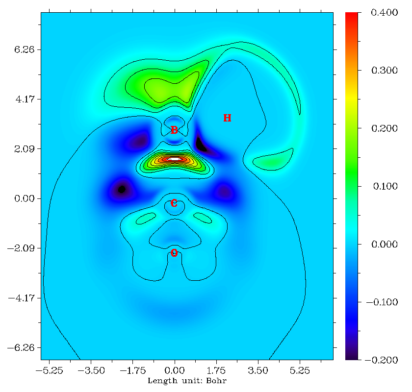
4.100.21 表征几何结构的例子¶
(Examples of characterizing geometric structure)¶
如第 3.100.21 节所述，主功能 100 的子功能 21 可用于计算多种仅基于分子几何的结构性质。本节我提供几个例子。
4.100.21.1 计算 α-环糊精的分子直径和长/宽/高¶
(Calculate molecular diameter and length/width/height for alpha-cyclodextrin)¶
主功能 100 的子功能 21 可计算分子直径和长/宽/高，本节我将以 examples/alpha-cyclodextrin.pdb 为例说明。请先阅读第 3.100.21 节以理解该功能如何工作。
启动 Multiwfn 并输入 examples/alpha-cyclodextrin.pdb
Multiwfn 交互
- 100 — 其他功能（第一部分）(Other functions (Part 1))
- 21 — 计算纯基于几何的量(Calculate quantities that are purely based on geometry)
- size — 计算分子直径和长/宽/高(Calculate molecular diameter and length/width/height)
你将在屏幕上看到以下信息
Farthest distance: 44(H ) --- 123(H ): 14.027 Angstrom
vdW radius of 44(H ): 1.200 Angstrom
vdW radius of 123(H ): 1.200 Angstrom
Diameter of the system: 16.427 Angstrom
Radius of the system: 8.213 Angstrom
Length of the three sides: 15.341 14.714 9.511 Angstrom
屏幕打印的直径 16.427 Å 按 14.027+2×1.2 计算。半径 8.213 Å 即直径之半。分子的长/宽/高，即 "Length of the three sides" 后的三个值，按如下计算：Multiwfn 首先自动旋转分子，使其三个主轴恰平行于三个笛卡尔轴，同时平移分子将其几何中心置于原点。然后根据边界原子（即 X/Y/Z 坐标取最大/最小值的原子）的位置和原子 Bondi 范德华半径，可直接得出分子的长/宽/高。
若想直观描绘长/宽/高，可接着选选项 1，你将看到下图（“原子尺寸比例(Ratio of atomic size)”已设为 4.0，此时原子球半径恰等于原子范德华半径）。可见，蓝色盒子紧紧包住分子范德华表面，其三条边长即分子的长/宽/高，即分别为 15.341、14.714 和 9.511 Å。
你还可选选项 2 将旋转平移后坐标的分子导出到当前文件夹的 new.pdb。该文件含 "CRYST1" 字段，记录晶胞长度。你可将此文件直接载入 VMD (http://www.ks.uiuc.edu/Research/vmd/) 可视化程序，然后在 VMD 命令窗口输入 pbc box 命令显示盒子。经 slight 调整绘制效果并手动编辑图形后，你将得到下图，它清楚说明了分子几何特征。
也可在 VMD 中可视化分子主轴。只需将 examples\principal_axes.tcl 的全部内容复制到 VMD 命令窗口，你将看到下图，其中红、蓝、绿轴分别代表分子的三个主轴。
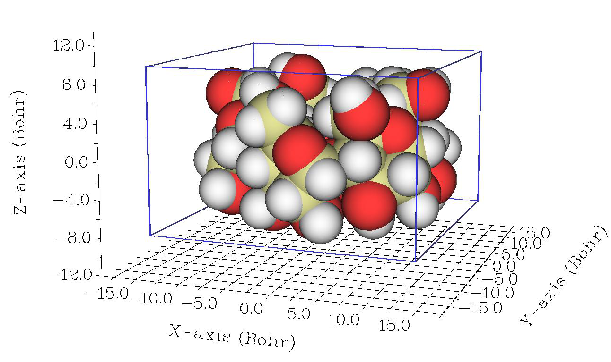
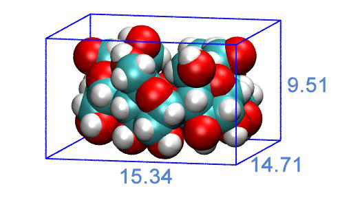
关于此主题的更多讨论见我的博客文章“使用Multiwfn计算分子的长宽高”（中文，http://sobereva.com/426）。
4.100.21.2 研究[14]轮烯的分子平面性¶
注：本节的中文版是我的博客文章“使用Multiwfn定量与图形化研究分子的平面性”（http://sobereva.com/618），其中还包含更多扩展讨论和额外例子。
在本节中我们将研究[14]轮烯的平面性，由于小环内的空间位阻效应，它并非严格平面。其在ωB97XD/def2-TZVP水平下优化的结构如下所示
请先阅读我的论文J. Mol. Model., 27, 263 (2021) DOI: 10.1007/s00894-021-04884-0或第3.100.21节，以了解分子平面性参数（MPP）、偏离平面的跨度（SDP）和到平面的有符号距离（ds）的基本知识，本节将用它们来表征[14]轮烯的分子平面性。
启动Multiwfn并输入
Multiwfn 交互
- examples[14]annulene.xyz — 其中包含优化好的结构
- MPP — 进入研究分子平面性的功能
- 1-14 — 我们只用全部碳原子来确定平面性。你也可以直接输入h选择全部非氢原子
此时你马上可以看到以下输出，其中包括为所选原子（即全部碳原子）拟合的平面的参数、原子到拟合平面的有符号偏差（ds）及其最正值和最负值。最后给出了MPP和SDP。
Plane equation: A= 1.00000 B= -0.00000 C= 0.00233 D= 0.00000
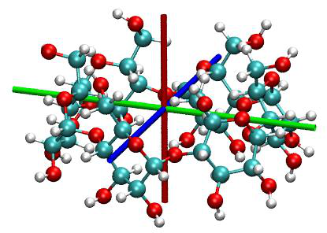
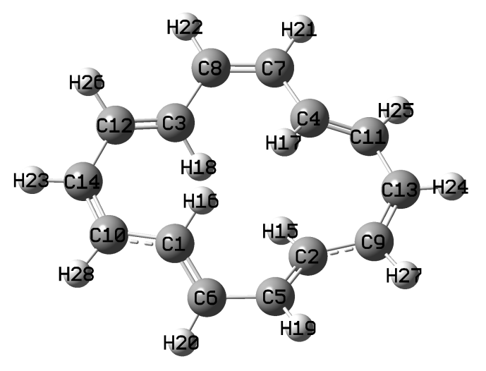
Deviation of atom 1(C ) to the plane: -0.21768 Angstrom
Deviation of atom 2(C ) to the plane: 0.21768 Angstrom
Deviation of atom 3(C ) to the plane: 0.21430 Angstrom
Deviation of atom 4(C ) to the plane: -0.21430 Angstrom
Deviation of atom 5(C ) to the plane: -0.07768 Angstrom
Deviation of atom 6(C ) to the plane: 0.07768 Angstrom
Deviation of atom 7(C ) to the plane: -0.04457 Angstrom
Deviation of atom 8(C ) to the plane: 0.04457 Angstrom
Deviation of atom 9(C ) to the plane: -0.02456 Angstrom
Deviation of atom 10(C ) to the plane: 0.02456 Angstrom
Deviation of atom 11(C ) to the plane: 0.09971 Angstrom
Deviation of atom 12(C ) to the plane: -0.09971 Angstrom
Deviation of atom 13(C ) to the plane: -0.03585 Angstrom
Deviation of atom 14(C ) to the plane: 0.03585 Angstrom
Maximal positive deviation to the fitted plane is 2(C ): 0.21768 Angstrom
Maximal negative deviation to the fitted plane is 1(C ): -0.21768 Angstrom
Molecular planarity parameter (MPP) is 0.127145 Angstrom
Span of deviation from plane (SDP) is 0.435354 Angstrom
MPP和SDP都不小，即到拟合平面的均方根偏差和偏离拟合平面的跨度都很明显，清楚地表明[14]轮烯只具有有限的平面性。这与我们从前面所示结构图中直观观察的结果完全一致。
接下来，我们通过给原子着色来图形化展示每个原子到拟合平面的偏差，因此接着输入
Multiwfn 交互
- y — 让Multiwfn导出包含ds值的.pqr文件
- [直接按ENTER键] — 输出到当前文件夹下的[14]annulene.pqr
注意，导出的[14]annulene.pqr中原子的“charge”属性（倒数第二列）对应ds值。
启动VMD可视化软件（http://www.ks.uiuc.edu/Research/vmd/），将.pqr文件拖到VMD主窗口中加载，然后进入“图形(Graphics)”-“显示方式(Representations)”面板，将“着色方式(Coloring Method)”设为“Charge”，将“绘制方式(Drawing Method)”设为“CPK”。然后进入“轨迹(Trajectory)”选项卡，在“颜色刻度数据范围(Color Scale Data Range)”标签下的两个文本框中分别输入-0.4和0.4，然后按ENTER键。最后，将背景色改为白色，你将看到
红色和蓝色清楚地区分了位于拟合平面两侧不同侧的碳原子。颜色越深，到拟合平面的偏差越大。显然，通过这种表示方式，可以快速而非常方便地识别分子中哪些原子严重破坏了平面性。
4.100.21.3 研究分子动力学轨迹中环[18]碳分子平面性的演化¶
在上一个例子中，我们看到可以在Multiwfn中定量而直观地研究分子平面性。Multiwfn也支持对动态过程进行这类分析，输入的轨迹应记录为多帧.xyz文件。
在本例中我说明如何研究环[18]碳在其分子动力学轨迹中分子平面性的演化。整个2000 fs轨迹是在我关于环[18]碳及类似体系振动特征的工作中通过298.15 K下的从头算动力学模拟产生的，见Chem. Asian J., 16, 56 (2021) DOI: 10.1002/asia.202001228。前500 fs的xyz轨迹文件已作为examples\C18_MD_500.xyz提供。轨迹每1 fs保存一次，因此共有501帧（第一帧对应优化好的结构，它是严格平面的）。
启动Multiwfn并输入examples\C18_MD_500.xyz
Multiwfn 交互
- MPP — 进入研究分子平面性的功能
- a — 选择全部原子
- a — 选择全部帧
现在当前文件夹中有了MPP_SDP.txt，其第1、2、3列分别对应所选全部帧的帧序号、MPP和SDP。然后你可以用例如Origin软件绘制MPP和SDP沿轨迹变化的曲线图，以方便地研究平面性在过程中的变化（下图是针对包含2001帧的整个轨迹绘制的，该轨迹可从http://sobereva.com/multiwfn/extrafiles/C18-MD.xyz下载）：
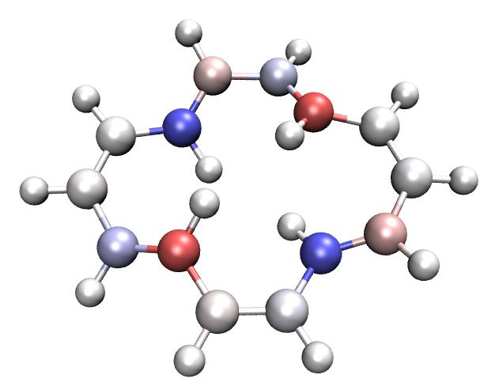
此外，当前文件夹中生成了ds.pqr。在该文件中，“原子电荷”列对应每一帧中所选原子的ds值（未选原子的值为零）。利用此文件和专门的VMD脚本examples\scripts\ds.tcl，我们能够根据ds值以动态原子着色方式可视化轨迹，从而非常生动地展示每个原子偏离平面的情况。现在，将examples\C18_MD_500.xyz载入VMD，然后把ds.pqr和examples\scripts\ds.tcl复制到VMD安装文件夹，启动VMD并在VMD的控制台窗口中输入source ds.tcl运行该脚本，此脚本将从ds.pqr加载ds数据并设置好可视化状态。之后，当你播放轨迹动画或拖动VMD中的进度条时，原子将根据对应帧的ds值自动着色。如果你感到困惑，请看视频演示：http://sobereva.com/multiwfn/res/ds_color.mp4（在此视频中我还使用了VMD中的“RMSD trajectory tool”插件来消除整体分子运动，以便更容易观察）。注意，ds.tcl脚本设置的默认颜色刻度为从-0.4（蓝色）到0.4（红色）。
4.100.21.4 计算空腔直径并图形化展示其区域¶
本节的中文版是“使用Multiwfn计算分子和晶体中的空腔”http://sobereva.com/643（中文），其中包含更多例子和讨论。
请先查看第3.100.21节的相应部分，以理解计算空腔直径算法的基本思想。在本例中，我们将计算以下体系中富勒烯部分（以绿色高亮显示）的空腔直径。实验结构为examples\open_fullerene.pdb。
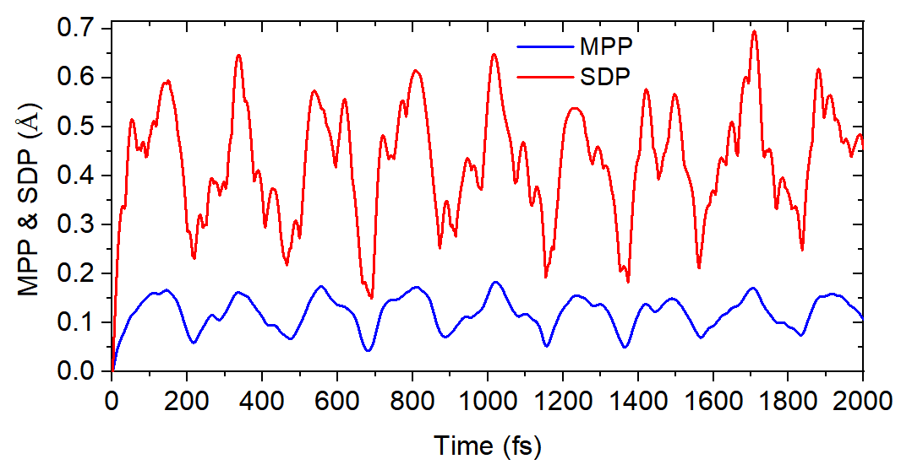
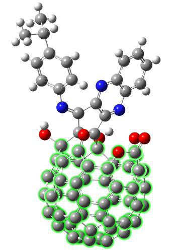
启动Multiwfn并输入open_fullerene.pdb
Multiwfn 交互
- cav — 进入计算空腔直径的功能
- 1,12-20,23-67,101 — 富勒烯部分的原子，它们将用于检测球半径
- 1 — 使用上面输入的原子的几何中心作为球心的初始位置
- 1 — 允许自动调整球心以使球尺寸最大
然后从屏幕上你可以看到
X/Y/Z of initial geometry center are 3.901518 3.594304 11.835946 Angstrom
Initial sphere radius is 1.677086 Angstrom
[...ignored]
Step 5
Current coordinate: 3.939857 3.615266 11.899052 Angstrom
Gradient: 0.009072 0.022419 0.013652 Norm 0.027772
Displacement: 0.002400 0.005932 0.003612 Norm 0.007348 Angstrom
Goal: displacement norm < 0.01000000 Angstrom
Converged after 5 iterations
Final X/Y/Z of sphere center: 3.942257 3.621198 11.902664 Angstrom
Radius is 1.707257 Angstrom
Diameter is 3.414514 Angstrom
Volume is 20.844205 Angstrom^3
如你所见，最初代表空腔的球 centered 在(3.901518, 3.594304, 11.835946) Å，半径为1.677 Å。调整经过5次迭代后完成，最终球心位于(3.942257, 3.621198, 11.902664) Å，球半径为1.707 Å。因此，实际空腔直径为3.414 Å。
你还可以在屏幕上看到以下命令，它们用于在VMD（http://www.ks.uiuc.edu/Research/vmd/）程序中绘制球体，以图形化展示空腔
color Display Background white
draw material Transparent
draw color yellow
draw sphere { 3.942 3.621 11.903 } radius 1.707 resolution 100
启动VMD，将open_fullerene.pdb载入其中，打开“图形(Graphics)”-“显示方式(Representation)”面板并将“绘制方式(Drawing Method)”设为“CPK”，然后将“球体比例(Sphere Scale)”减小到0.7，再把以上四条命令复制并粘贴到VMD的控制台窗口中执行，你将看到下图，黄色球体清楚地显示了空腔，其直径对应于前面提到的3.414 Å。
本节示例的功能非常通用，它还可用于研究形状非常不规则的空腔、研究环体系的内径以及研究周期性晶体体系的空腔尺寸，相应例子见我的博客文章http://sobereva.com/643。
4.100.22 分析非平面体系的π电子特征：¶
环庚三烯¶
关于本模块在研究π电子结构中的更多应用例子见我的这篇论文：Theor. Chem. Acc., 139, 25 (2020)，强烈建议你阅读。如果你的工作中涉及此模块，请不仅引用Multiwfn原文，还要引用这篇论文。
本例的目的是说明如何基于已识别的定域分子轨道（LMO）的π类型来研究非平面体系的π电子结构，并展示如何计算分子轨道的π组成。我们将以简单的非平面分子环庚三烯为例。如果你还没有读过第3.100.22节，请先阅读它，其中描述了细节和算法。
注意，对非平面体系检测π轨道的方式与对严格平面体系的方式很不相同。我已给出过后者的例子。在第4.5.3节中，我已提到
如何让Multiwfn自动检测严格平面体系的π分子轨道，然后通过ELF-σ和ELF-π分别研究σ和π电子结构。在第4.4.9节中，我说明了如何通过绘制LOL-π图研究平面体系卟啉的π电子离域路径。
检测LMOs的π类型 对于非平面体系，为了分别研究σ和π电子，必须首先把分子轨道变换为LMOs。如果你不熟悉LMOs，见第3.22节。
启动Multiwfn并输入：examples\cycloheptatriene.fch
Multiwfn 交互
- 19 — 轨道定域化
- 1 — 定域化占据轨道
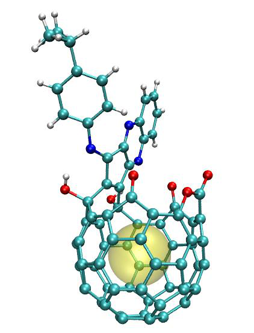
100 // 其它功能（第一部分）(Other functions (Part 1))
Multiwfn 交互
- 22 — 检测π轨道
- -1 — 当前轨道为定域化形式
0 // 在默认设置下检测π LMOs然后设置它们的占据数 识别出三个π LMOs：
Expected pi orbitals, occupation numbers and orbital energies (eV):
23 2.000000 -8.361389
24 2.000000 -6.762986
25 2.000000 -5.798201
Total number of pi orbitals: 3
Total number of electrons in pi orbitals: 6.000000
假设我们将研究π电子特征，我们选择选项2将所有其它轨道的占据数设为零。
关于弥散函数的重要注记 要以上述方式自动确定π轨道，最好去掉弥散函数。如果你坚持使用弥散函数，应注意两点：
（1）在执行轨道定域化的界面中，应选择“-6 设置定域化方法(Set localization method)”，并选择“3 基于Becke布居的Pipek-Mezey(Pipek-Mezey based on Becke population)”。该定域化方法与弥散函数兼容，但比默认的Pipek-Mezey方法耗时得多。
（2）在检测pi MOs的界面中，应选择“6 设置计算轨道组成的方法(Set the method for calculating orbital composition)”然后选择Hirshfeld或Becke方法，这是因为默认的计算轨道组成的方法，即Mulliken+SCPA，在存在弥散函数时不能正常工作。
基于LMOs的π类型研究π电子结构 由于除π轨道之外的轨道占据数已被设为零，同时密度矩阵已自动更新，现在我们可以进行任何分析，
其结果将只由π电子贡献。例如，我们用通常方式使用主功能5绘制电子密度等值面图（等值=0.03 a.u.）和LOL等值面图（等值=0.5），它们分别如下左图和右图所示。
从两张图中，都很容易看出C4-C6、C1-C2和C3-C5必定强于
C1-C4和C2-C3，因为在前者中π电子在相应的两个原子之间离域得明显更显著
注：偶尔，自动π轨道检测算法可能把一个或多个孤对LMO(s)错误地计入π轨道，从而污染LOL-π图。最简单的解决办法：在通过主功能19进行轨道定域化，然后用主功能100的子功能22自动检测pi轨道之后，请用主功能0检查每个占据轨道，找出仍处于占据状态的孤对LMO(s)并记录其序号。然后进入主功能6并选择子功能26，输入孤对LMO(s)的序号，再输入0使它们变为非占据。之后，返回主菜单，像通常一样用主功能5生成网格
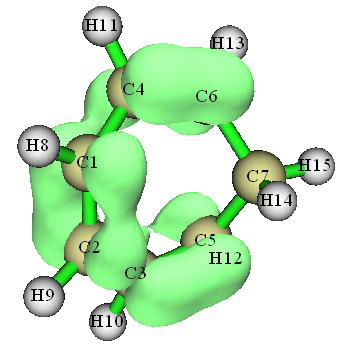
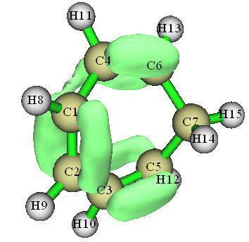
数据，即LOL-π数据。
基于LMOs的π类型，我们还可以进行其它类型的分析，例如Mayer键级计算。我们如4.9.1节所述计算Mayer键级，结果为
## 1: 1(C ) 2(C ) 0.70534437
## 2: 1(C ) 4(C ) 0.18472895
## 3: 1(C ) 5(C ) 0.10215925
## 4: 2(C ) 3(C ) 0.18472484
## 5: 2(C ) 6(C ) 0.10215398
## 6: 3(C ) 5(C ) 0.80861164
## 7: 4(C ) 6(C ) 0.80860020
## 8: 5(C ) 6(C ) 0.07556895
π键级的顺序为C4-C6 > C1-C2 > C1-C4，此结果与我们通过观察ELF-π图的预期完全一致。
本节说明的功能相当强大，也可应用于相当大的
体系。例如，下左图是用上述步骤绘制的螺烯的LOL-π等值面图（等值=0.55）。而且，利用选项“5 设置原子范围约束(Set constraint of atom range)”，可以定义
用于识别π LMOs的区域约束。例如，下右图显示了螺烯中位于中央两个六元环上的五个π LMOs贡献的电子密度。
在LMO
表象下也可以正常进行多中心键级计算，因此你可以通过此分析很容易识别上述体系中不同环的π共轭强度。
计算占据MOs的π组成 基于已检测的π LMOs，我们可以计算当前体系任意轨道的π组成。让我们查看环庚三烯占据MO的π组成。在我们进行早先的轨道定域化时，当前文件夹中自动导出了new.fch，其中记录了全部占据LMOs。
Multiwfn 交互
- 启动并输入以下命令：new.fch — 加载它以取回占据LMOs
- 100 — 其它功能（第一部分）(Other functions (Part 1))
Multiwfn 交互
- 22 — 检测π轨道
- -1 — 当前轨道为定域化形式
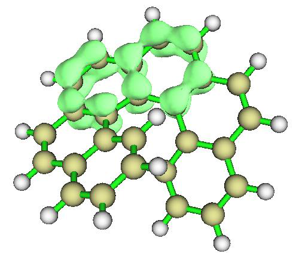
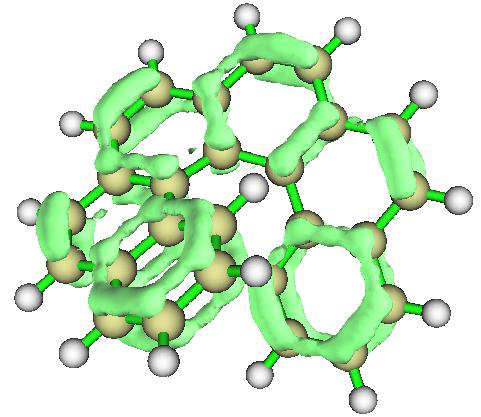
Multiwfn 交互
- -1 — 检测π轨道然后计算另一文件中轨道的π组成
- examples\cycloheptatriene.fch — 此文件包含MOs [直接按ENTER键使用50%的打印阈值]
现在所有π组成高于50%的占据MOs都已显示：
Orbital 23 (Occ= 2.00000) pi composition: 65.003%
Orbital 24 (Occ= 2.00000) pi composition: 84.466%
Orbital 25 (Occ= 2.00000) pi composition: 92.863%
此分析之后，内存中的轨道已被examples\cycloheptatriene.fch中记录的轨道替换。因此，现在你可以返回主菜单然后进入主
功能0绘制π MOs的等值面，如下所示
你可以看到，计算得到的π组成非常合理。例如，在MO23中，你可以看到在C6-C7和C5-C7成键区有明显的σ特征，此外，在H10、H11和H14周围还有等值面，这些观察解释了为什么MO23的π组成不太接近100%。相比之下，MO25轨道等值面的σ特征不那么明显，因此MO25可视为准π轨道。
计算非占据MOs的π组成 也可以计算非占据MOs的π组成。在这种情况下，还需要非占据LMOs。现在我们做这类分析。我们返回主菜单然后输入
Multiwfn 交互
- 19 — 轨道定域化(Orbital localization)
- 2 — 同时定域化占据和非占据轨道
- 100 — 其它功能（第一部分）(Other functions (Part 1))
Multiwfn 交互
- 22 — 检测π轨道
- -1 — 当前轨道为定域化形式
- 3 — 把考虑中的LMOs切换为“全部定域化轨道(all localized orbitals)”
2 // 改变识别π轨道的默认密度阈值。因为当前几何高度扭曲，必须采用更宽松的密度阈值，否则你会发现没有
非占据π LMO能被识别
0.05 // 比默认阈值大得多（更宽松）的值
-1 // 检测π轨道然后计算另一文件中轨道的π组成 现在识别出六个π LMOs，如下所示。如果你感兴趣可以可视化它们
Expected pi orbitals, occupation numbers and orbital energies (eV):
23 2.000000 -8.361389
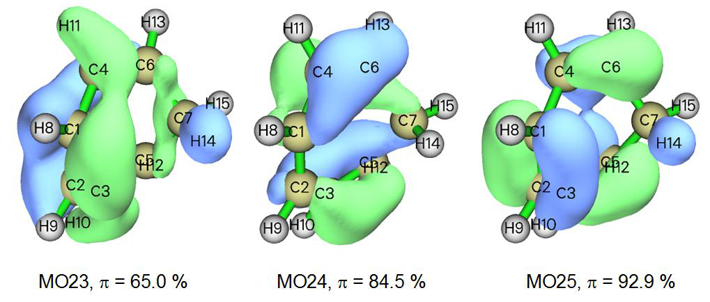